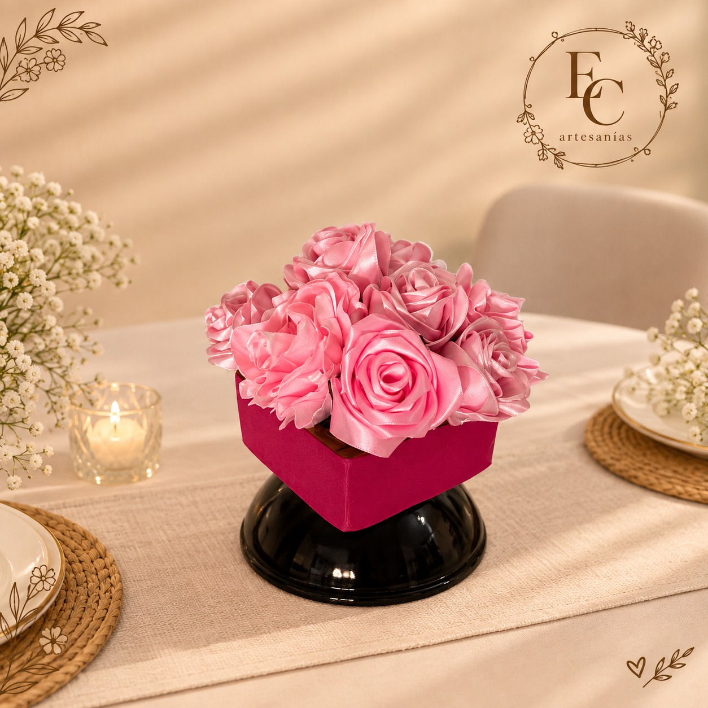
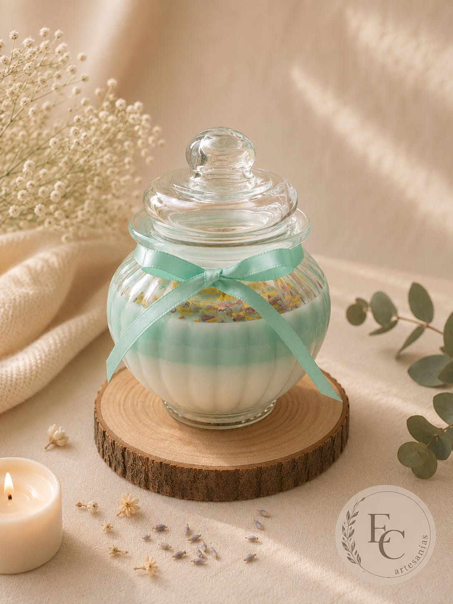
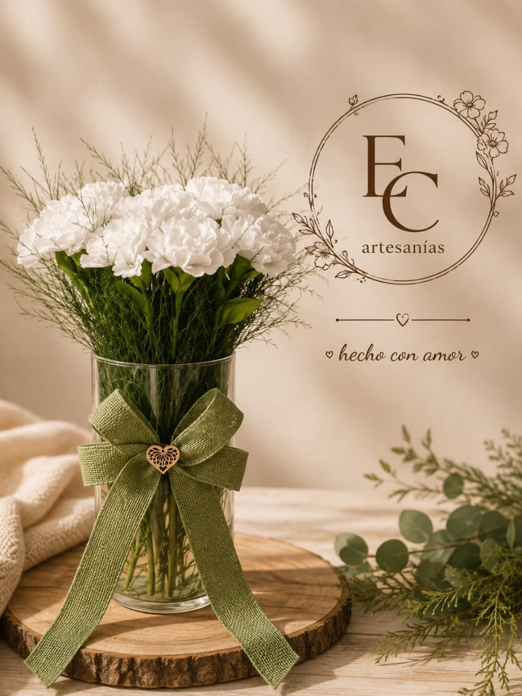
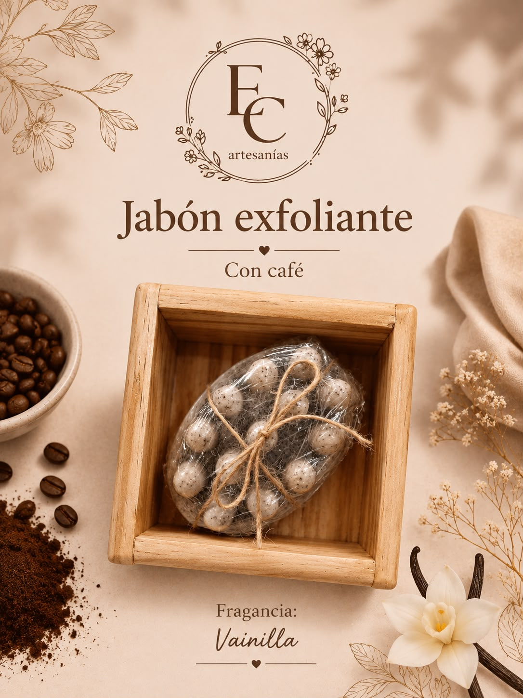
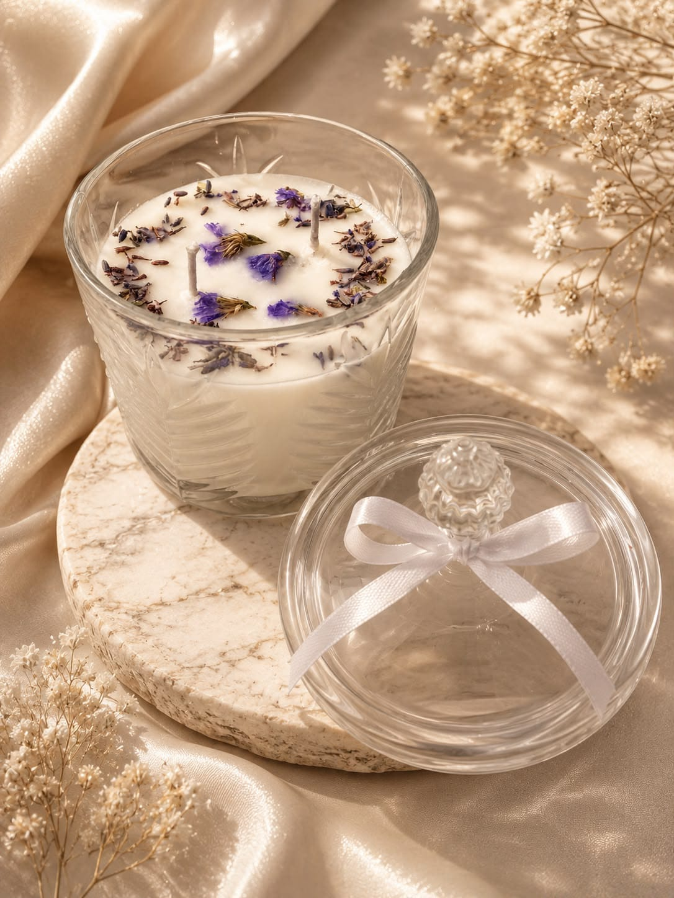

Detalles hechos a mano para regalar y regalarte.
Jabones, sachets, velones, flores eternas y souvenirs de Artesanías EC. Elige en el catálogo y pide por WhatsApp.

Cada jabón se corta, cada velón se vierte y cada flor se preserva a mano, una tanda pequeña a la vez.
Del taller a tu casaLo que hacemos
Cinco líneas, todas hechas en casa. Toca una para ver sus productos en el catálogo.

Jabones artesanales
Saponificados en frío con aceites vegetales, sin químicos agresivos.
Ver jabones
Sachets aromáticos
Para clósets, gavetas o el espejo del carro, decorados con flores secas.
Ver sachets
Velones
Vertidos a mano con pabilo de algodón y cera vegetal.
Ver velones
Flores eternas
Ramos y arreglos que conservan su color, sin agua ni mantenimiento.
Ver flores
Souvenirs
Recuerdos para baby showers, bodas y otras celebraciones, por cantidad.
Ver souvenirsAsí se hacen

Saponificados en frío
Con aceites vegetales y sin químicos agresivos. Se curan durante semanas antes de salir del taller, lo que los hace más suaves y duraderos.
Ver los jabones
Vertidos a mano
En tandas pequeñas, con pabilo de algodón y cera vegetal. Cada velón se deja curar 24 horas antes de encender su primera mecha.
Ver los velones
Preservadas para durar
Flores preservadas con glicerina vegetal: conservan su textura y color hasta por tres años, sin agua, sin sol directo y sin mantenimiento.
Ver las floresLo más nuevo
Las últimas piezas que salieron del taller.
Calendario de regalos
Las fechas en que más se regala. Encarga con tiempo por WhatsApp.
¿Cómo pedir?
No hay carrito ni pagos en línea: todo se coordina directo con nosotros por WhatsApp.
Elige tus favoritos
Recorre el catálogo y marca ♡ los productos que más te gusten.
Escríbenos por WhatsApp
Pide un producto directo desde su tarjeta, o envía toda tu lista de favoritos de una vez.
Coordinamos todo
Te confirmamos precio y colores disponibles, y vemos si recoges en casa o coordinamos un punto de encuentro.